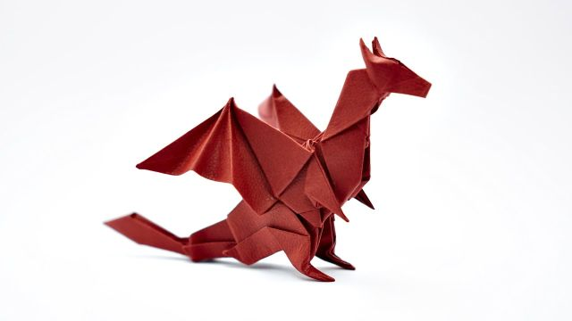
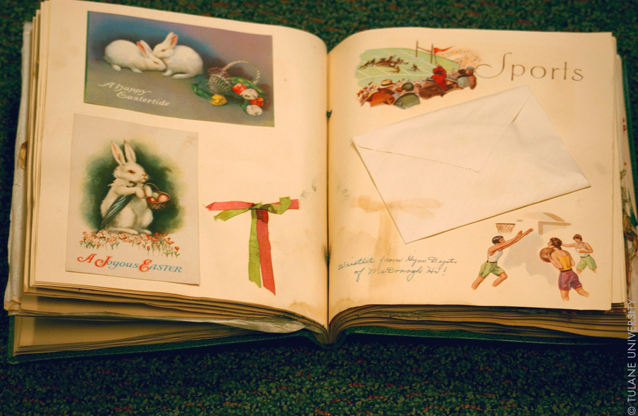
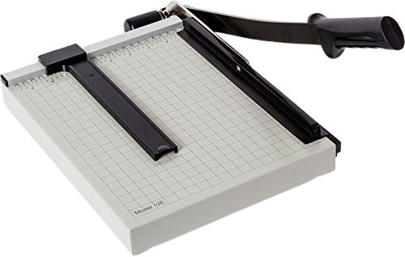
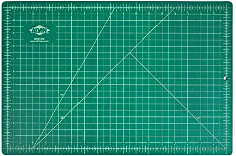
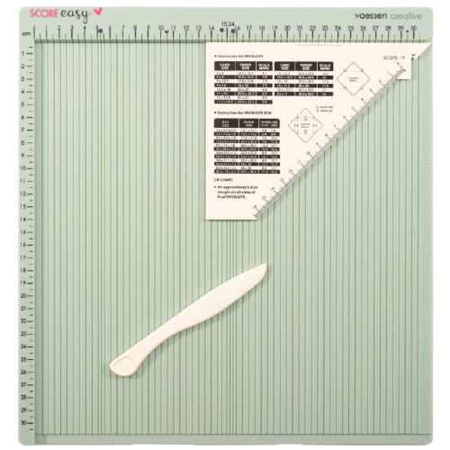
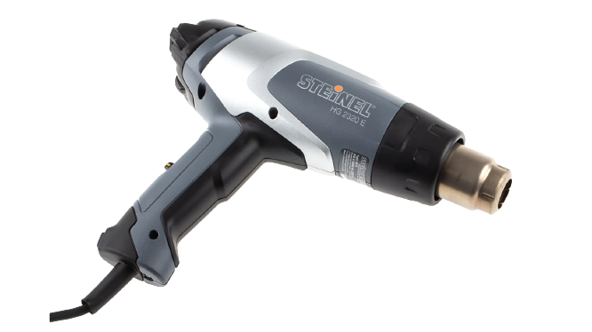
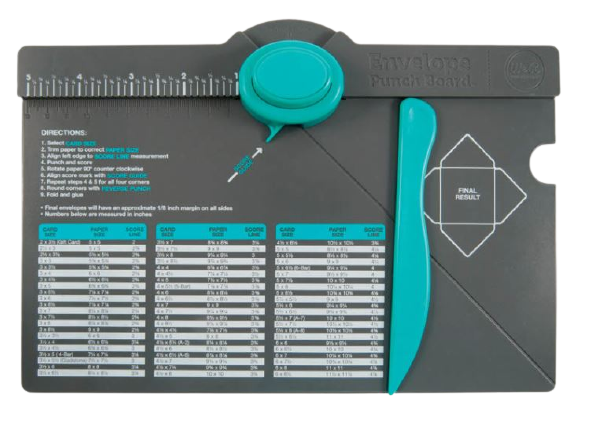
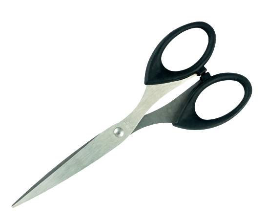
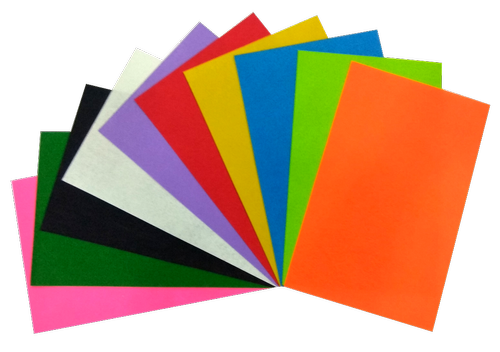
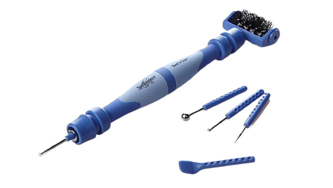

What is papercraft?
Papercraft is a collection of crafts using paper or card as the primary artistic medium for the creation of two or three-dimensional objects. Paper and card stock lend themselves to a wide range of techniques and can be folded, curved, bent, cut, glued, molded, stitched, or layered. Papermaking by hand is also a paper craft.
Examples of papercraft
Paper Model
Paper models, also called card models or papercraft, are models constructed mainly from sheets of heavy paper, paperboard, card stock, or foam.

Tutorials
RIBA Learning: 3D Paper Model Techniques
Origami
Origami, from ori meaning "folding", and kami meaning "paper" is the art of paper folding, which is often associated with Japanese culture. In modern usage, the word "origami" is used as an inclusive term for all folding practices, regardless of their culture of origin
Tutorials
How To Make an Easy Origami Butterfly (in 3 MINUTES!)
MAGIC BALL - Yakomoga EASY Origami tutorial
Origami Dragon - slow, step by step tutorial
Quilling Art
Quilling or paper filigree is an art form that involves the use of strips of paper that are rolled, shaped, and glued together to create decorative designs. The paper is rolled, looped, curled, twisted, and otherwise manipulated to create shapes that make up designs to decorate greetings cards, pictures, boxes, eggs, and to make models, jewelry, mobiles, etc. Quilling starts with rolling a strip of paper into a coil and then pinching the coil into shapes that can be glued together. There are advanced techniques and different sized paper that are used to create 3D miniatures, abstract art, flowers, and portraits among many things.

Tutorials
35 Paper Quilling Shapes: Art & Craft Tutorials by HandiWorks
Art of Quilling!!.. 12 Paper Quilling Pattern | Design For Beginners
Paper Quilling How To for Beginners
Scrapbook
Scrapbooking is the art of saving memories in hard copy. Scrapbookers are people that love their families and friends and treasure those relationships. Scrappers place photos into blank albums and embellish them with artwork and journaling, as a way of preserving precious memories.
Tutorials
How to Make Birthday Pop Up Scrapbook
Scrapbook Tutorial/How to make Scrapbook/DIY Scrapbook Tutorial/Birthday Scrapbook Ideas/
Papercrafting Tools
Paper Trimmer
It’s okay to use a simple knife, but if you’re looking to work fast or to create professional cutouts, then you’ll need a paper trimmer. This tool cuts beautifully and again, it can cut a paper bundle all at once. There are two main kinds of trimmers:
1. Guillotine trimmer – suitable for high volumes and thick bundles of paper.
2. Rotary trimmer – appropriate for low volumes. It’s also safer and creates a smoother, cleaner trim.
Self-Healing Cutting Mat
A self-healing cutting mat is one of the most important paper cutting supplies. This item works as a form of protection that prevents damage to your work surface.
If you are using a knife to cut the paper, you can select any size of cutting mat, but if you’ll be using a rotary cutter, it’s better that you use a large cutting mat.
Again, if you’re doing paper crafting as a hobby, you can use a small cutting mat, like a 2mm, but if you’re doing it professionally, a bigger mat, like a 3mm, is necessary.
Scoring Board
With paper crafting, you will be folding papers a lot, and it’s advisable that you have a way of folding the papers quickly and efficiently. Such a tool comes with a bone folder and other items for efficient folding.
Heat Gun
Like a hair dryer, a heat gun producing heat without producing a flame. There are various ways in which a heat gun comes in handy, for instance:
Envelope Punching Board
This tool helps you measure as well as cut your paper. With it, you can easily measure your paper and make different envelope designs.
An envelope punching board comes graduated with different measurements and a few scoring tools, and you’ll find it most useful.
Scissors
This one is self-explanatory, isn’t it? You’ll need to cut paper quickly, and for that, a pair of scissors is indispensable. You can even get a few types for different styles of cutting, but it’s important that you watch the weight; you don’t want to get heavy scissors.
Craft Sheet
Cleaning up after doing crafting work is never very easy; it’s not something many people look forward to. Of course, you’ll need to clean up later but to make it easier, consider using a craft sheet. This is where all the waste from distressing, stamping, and other messy work will collect.
Tool ‘N’ One
A tool ‘n’ one is a great multi-tasking tool that you will find very helpful for simple craft work with paper. But what is it really? In simple words, it’s all your tools in your fingertips. This portable tool helps you perform many craft functions, including paper removal, piercing, and more.
Paper is one of the most versatile tools in crafting. You can stamp images on it, draw on it, watercolor it, cut it into shapes, or use it as a design element. The possibilities are truly endless! Grab your favorite paper sets, some adhesives, a few stamps and dies, and try these fun DIY papercrafting ideas now!